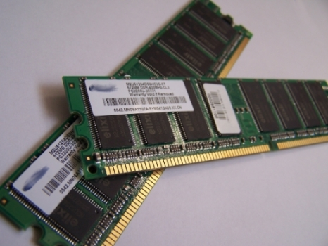

Random access memory (RAM) is fast-access memory that is cleared when the computer is power-down. RAM attaches directly to the motherboard, and is used to store programs that are currently running. RAM is a set of integrated circuits that allow the stored data to be accessed in any order (why it is called random). There are many different types of RAM. Distinctions between these different types include: writable vs. read-only, static vs. dynamic, volatile vs. non-volatile, etc.
